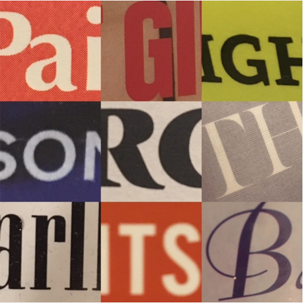

Hunt for Type
Go outside, armed with a camera. Look for examples of 6 different type classifications: humanist serif, rational serif, slab serif, grotesque sans serif, geometric sans serif, script.
This assignment was quite straight forward as it was the very first one, so not many deliberate design decisions were made on my part. We had to use the mobile app 'Layout' by Instagram and arrange our 6 selected photos on a 3x3 grid. This was quite challenging as I wasn't as familiar with identifying the type classifications.